다른 갤럼이 정리해놓은 글이 있는데
이 글에 나온 것 말고도 다른 요소들도 정리해서 이어지게 글 써봄
1. 대놓고 언급되는 현자
나볼
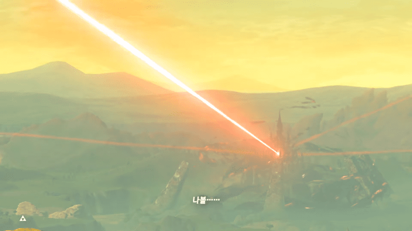
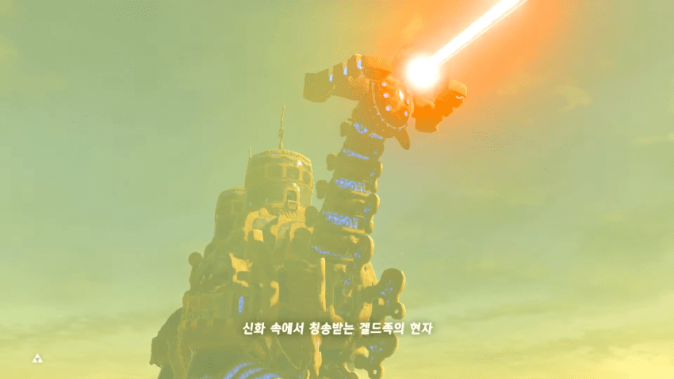
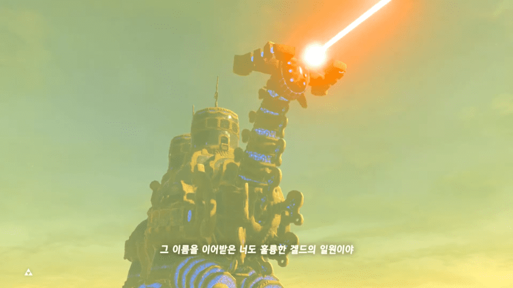
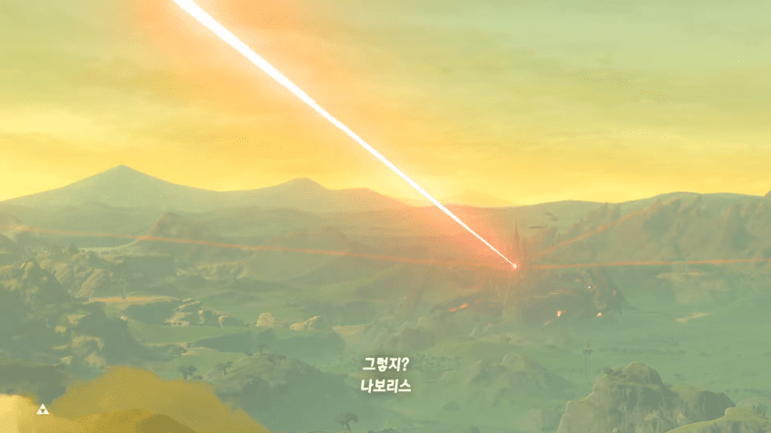
우르보사가 신수 해방 후 나보리스 가동시킬 때 나오는 컷신에서 나볼을 대놓고 언급해줌
루토
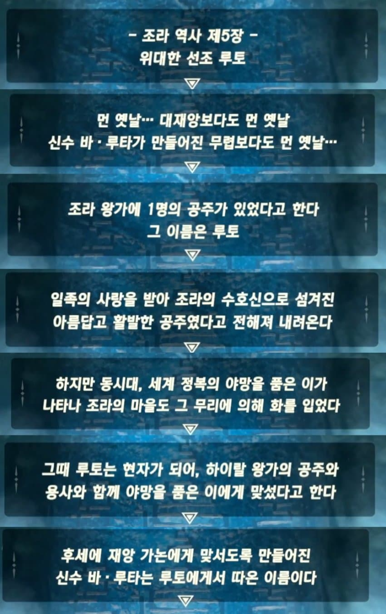
조라의 마을 근처에서 확인할 수 있는 비석에서 루토가 대놓고 언급됨
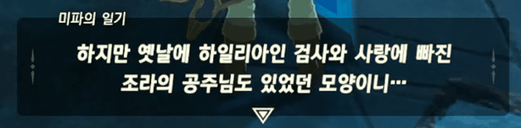
미파도 자기 일기에 루토를 간접적으로 언급함
2. BGM
시간의 신전
야숨에서 시간의 신전이 그대로 등장하는데,
배경음악이 시오 시간의 신전 멜로디랑 완전히 같음
야숨 버전을 그냥 들으면 뭐가 같냐고 생각할 수도 있는데,
시간의 신전 멜로디를 아주 길게 늘어뜨려서 피아노로 편곡한 거라 배속해보면 똑같아짐
이게 배속해서 비교한 음악인데, 야숨에서는 이런 식으로 시오를 비롯한 구작 음악들을 편곡해서 많이 숨겨놨음
링크의 집
시오랑 왕눈의 링크의 집 테마는 똑같은 음악임
링크의 집 음악은 시오부터 시작해서 바택, 황공에서도 꾸준히 나옴
조라의 마을
조라의 마을 음악도 마찬가지로 야숨왕눈 버전은 시오 버전과 완전히 동일한 음악의 편곡 버전임
에포나의 노래
야숨에서 카시와가 마구간에서 연주를 할 때 에포나의 노래를 연주함
마용의 샘에서도 에포나의 노래가 섞여서 나옴
대요정의 샘 음악이나 가논돌프의 테마, 이곳저곳에서 나오는 젤다의 자장가같은건 원본이 시오가 아니라 신트포기도 하고 아예 시리즈 전통같은거라 제외함
3. 트윈노파
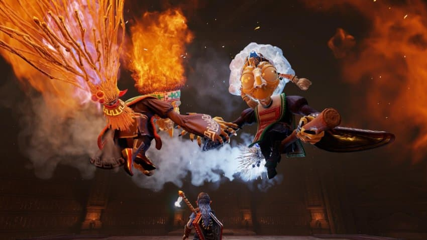
시오에선 코타케랑 코우메라는 트윈노파가 처음 등장함
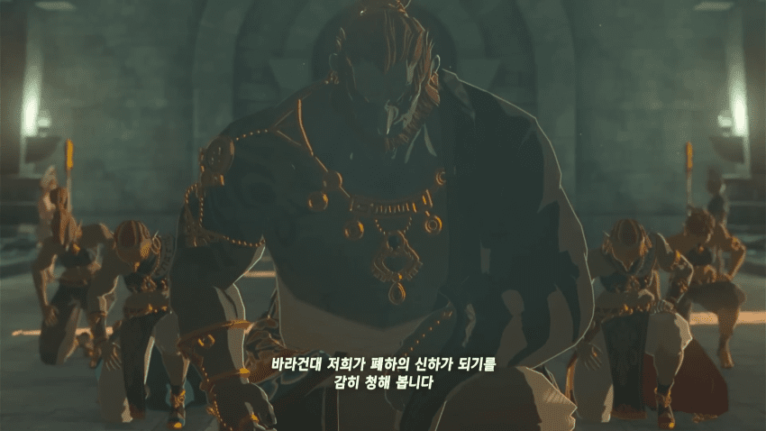
왕눈 컷신에서 가논돌프 바로 뒤 무릎꿇고 있는 두명이 있음
본편에선 저게 끝이고 더이상의 분량은 없지만
봉인전기에선 분량이 약간 있는 캐릭터임
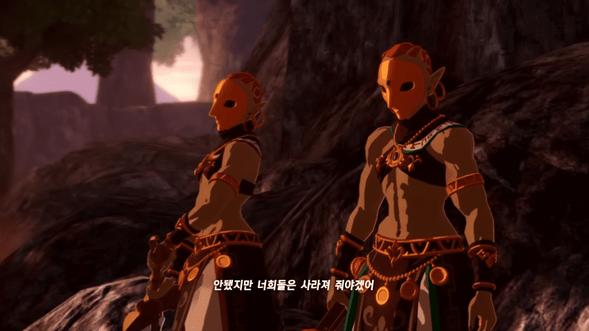
잘 보면 옷의 어깨 부분에 겔드족 언어로 뭔가 적혀있음
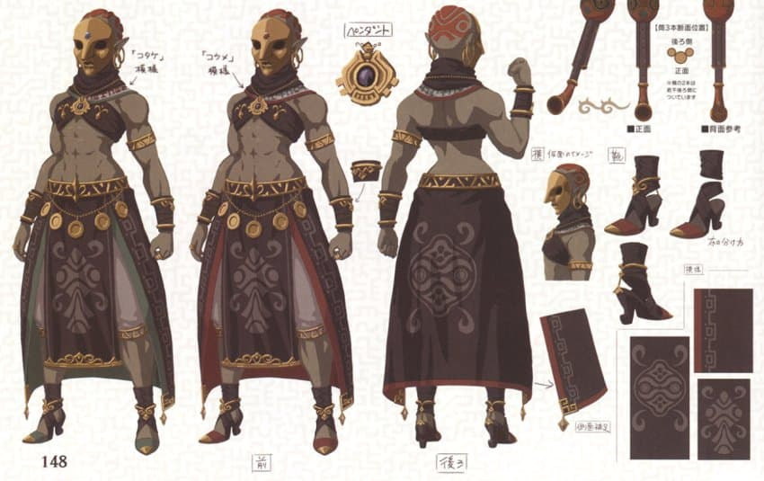
설정집에서 더 자세히 볼 수 있는데
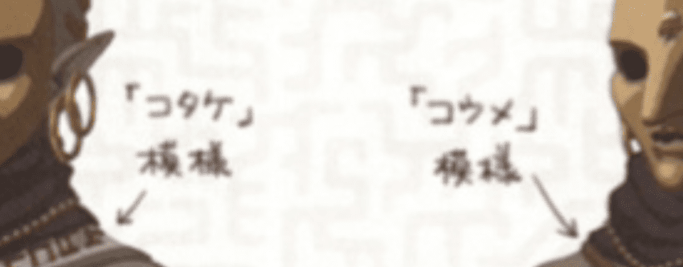
일본어로도 친절히 '코타케' 모양, '코우메' 모양이라고 적어둔걸 확인할 수 있음
그리고 치마의 색이 빨간색, 초록색인데
시오에서도 잘 보면 로브 색이 빨간색, 초록색임
얘네 둘은 왕눈에선 가논돌프의 유모가 아니라 충실한 부하 2명으로 나오기도 하고, 당연히 시오의 트윈노파랑 동일인물은 아니지만
시오랑 왕눈에서 똑같이 겔드족에 쌍둥이로 활동하는 코우메 코타케가 있는거
4. 왕눈 서사
왕눈 서사 자체가 시오의 스토리라인을 의도적으로 오마주해서
스토리의 큰 줄기가 거의 비슷하게 따라감
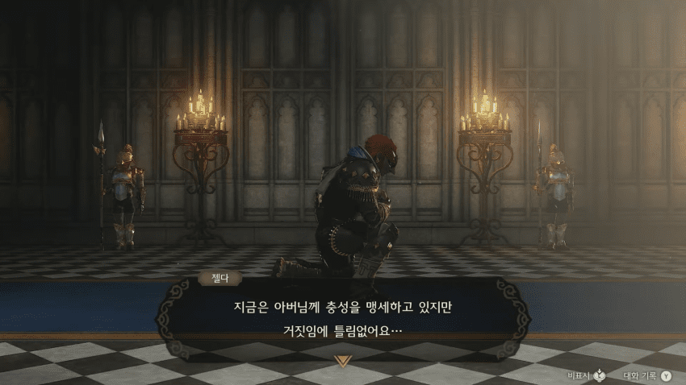
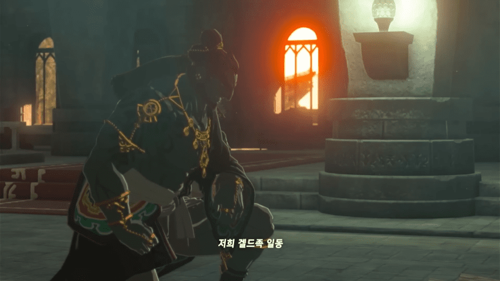
하이랄 성에서 왕가에 거짓 충성을 바치는 가논돌프 모습이 똑같이 오마주됨
이후의 스토리라인도 거짓 충성하던 가논돌프가 반란을 일으키고,
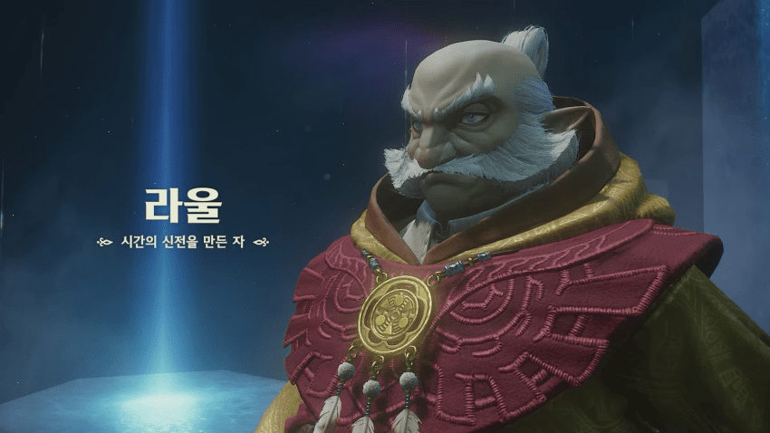
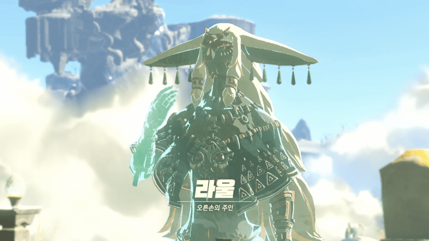
시오랑 왕눈에서 둘다 빛의 현자인 '라울'이
링크에게 현자들을 각성시키도록 이끌게 해서
가논돌프 토벌을 목적으로 진행되는 스토리마저 비슷하게 흘러감
5. 무기
다크링크, 시간의 용사의 옷같은건 위의 글에서 이미 언급됐으니 넘어가고
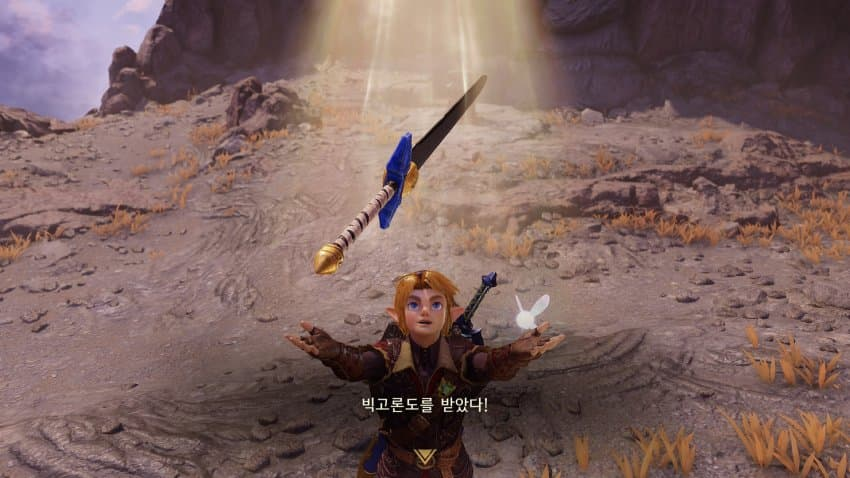
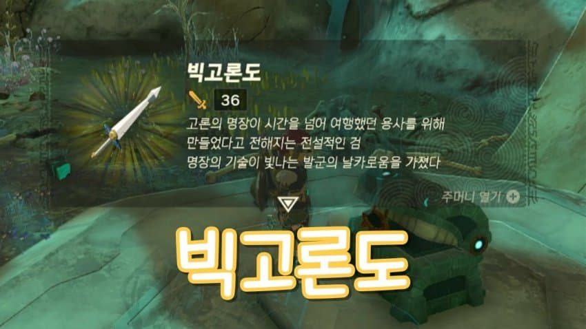
시간의 오카리나의 빅고론도도 야숨왕눈에서 입수할 수 있음
일단 생각나는건 이정도이긴 한데
야숨왕눈이 워낙 방대한 게임이라
더 찾아보면 숨겨진 시오 관련 요소는 분명 얼마든지 더 나올듯
댓글
수집 당시 댓글 20개
ㅇㅇ · 11.09 10:54:54
왈랄랄루 · 11.09 10:59:46
· ㅇㅇ · 11.09 11:02:52
ㅇㅇ · 11.09 12:52:54
· ㅇㅇ · 11.09 13:06:50
곢마 · 11.09 13:03:35
ㅇㅇ1 · 11.09 13:20:48
Burkan · 11.09 13:22:22
얀젤다 · 11.09 15:53:27
· 얀젤다 · 11.09 15:53:32
ㅇㅇ · 11.09 16:19:51
ㅇㅇ2 · 11.09 16:34:08
땨뗘(봇) · 11.09 18:06:05
2456778 · 11.09 18:10:02
ㅇㅇ · 11.09 18:18:07
· ㅇㅇ · 11.09 18:22:40
· ㅇㅇ · 11.09 18:29:49
향격쳐 · 11.09 19:11:59
원갈이 · 11.09 19:21:46
ㅇㅇ · 11.09 19:48:36